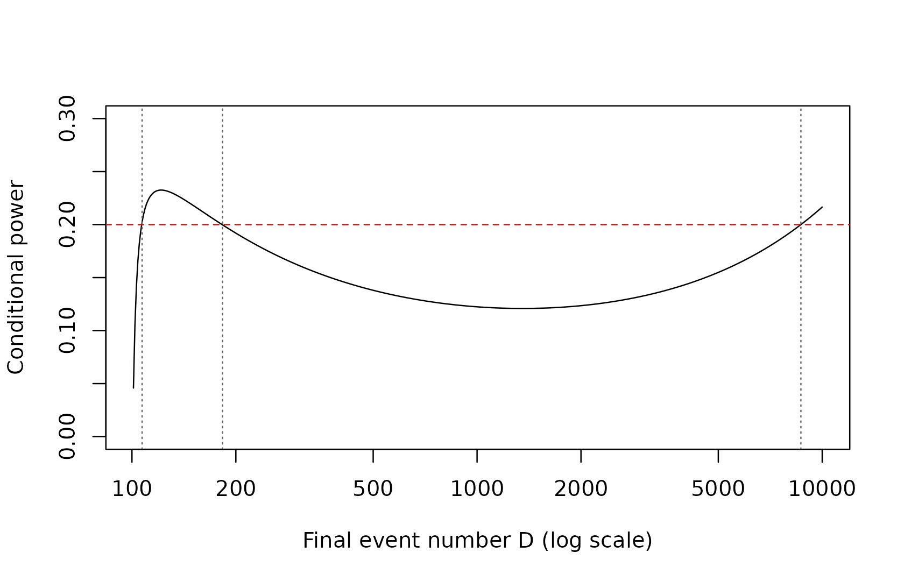

Conditional Power and Event-Number Reassessment
Source:vignettes/conditionalPower.Rmd
conditionalPower.RmdThis vignette explains the statistical model and implementation
behind Trials$conditionalPower() and
Trials$eventNumberReestimationFromConditionalPower() in
detail, including the canonical distribution, alternative-direction
mapping, effect assumptions, nonmonotone root search, and integer
algorithm. Both methods apply to a time-to-event comparison with one
interim analysis and one final analysis. They use the interim logrank
statistic and event count stored in a triggered milestone.
The mathematical and diagnostic examples first isolate particular
features of the two methods. The later sections then implement the
promising-zone policy in a milestone action and use it in a complete
TrialSimulator simulation program, following the same
action-based pattern used for other adaptive and enrichment designs.
Conditional power is a design calculation, not an automatic adaptation rule. In particular, changing a final event target after an unblinded interim can affect type I error. A promising-zone design must be pre-specified and its complete decision rule must be justified and evaluated, usually by simulation.
Statistical setting
Consider one treatment arm compared with placebo. Let
- be the number of events observed on the two arms at interim;
- be the total number of events at a future final analysis;
- be the interim logrank z statistic;
- be the treatment-to-placebo allocation ratio; and
- be the Schoenfeld information per event.
The package uses the sign convention of fitLogrank():
corresponds to an estimated treatment-to-placebo hazard ratio greater
than one. Therefore, when a hazard ratio below one is beneficial, use
alternative = "less".
It is convenient to map both alternatives to a lower-tail problem. Define
where is an assumed treatment-to-placebo hazard ratio. On this common scale, a negative or favors treatment. The final rejection region is
For alternative = "greater", this is equivalent to
comparing the original statistic with the upper boundary
.
What alpha means
The argument alpha is the one-sided nominal
level corresponding to the planned final critical boundary. It
is not necessarily the total design alpha, the cumulative alpha spent by
the final look, or the incremental alpha spent at that look. For
example, if an upper-tail group-sequential design has final critical
value
,
pass alpha = 1 - pnorm(c).
Conditional power
The member method has the following signature:
trial$conditionalPower(
milestone, formula, placebo, alternative, alpha, D, effect, ...
)Write for the interim information fraction. Under the canonical independent-increments model, conditional on the observed interim statistic,
It follows that the lower-tail conditional power is
The implementation provides three choices for the future effect.
A specified hazard ratio
For a positive numeric effect = h, the method uses
for "less" and
for "greater". This separates the assumed future effect
from random variation in the interim estimate. It also requires the
allocation ratio recorded at the milestone so that
can be computed.
The interim trend
For effect = "trend", the interim estimate is
extrapolated:
Substitution cancels and gives
This calculation is often useful as a sensitivity analysis, but it can be optimistic after a favorable interim because it treats the noisy interim estimate as the true future effect.
The null effect
For effect = "null", the remaining increment has zero
drift:
This is the conditional type I error at the specified final event
number, not power under a beneficial alternative. The event-number
reassessment method does not accept effect = "null"; use
conditionalPower() directly when this quantity is
wanted.
What happens near the interim
conditionalPower() requires
.
If the interim statistic has crossed the final boundary,
tends to one as
approaches
from above, but it need not remain high as more events accrue. Future
independent increments can dilute the interim result. Reaching the
final boundary at interim is also not the same as reaching a
pre-specified interim efficacy boundary and does not by itself authorize
stopping a real trial.
Inverting conditional power to obtain an event number
The member method has the following signature:
trial$eventNumberReestimationFromConditionalPower(
milestone, formula, placebo, alternative, alpha, target_cp,
effect, ..., D_cap = NULL
)For target conditional power , the reassessment method searches for
The strict requirement represents a genuine future final analysis. It also applies when the interim z statistic already reaches the final boundary.
The cap has the following semantics:
-
D_cap = NULL, the default, is converted toInffor every comparison and requests an unbounded search; - if a finite solution exists in the requested range, the smallest
solution is returned in
D, its conditional power is returned inachieved_cp, andtarget_reached = TRUE; - if no finite solution exists in the requested range,
Dandachieved_cpareNA, andtarget_reached = FALSE.D_capcontinues to report the requested cap.
Thus, a false target_reached does not mean the algorithm
failed. It means that the requested conditional power cannot be attained
within the permitted event budget, or at any finite event number when
the search is unbounded.
Why ordinary bisection is insufficient
Conditional power need not be monotone in . This matters particularly when a specified effect differs from the observed interim trend. A test based only on can miss an earlier target crossing, and bisection over the whole range can converge to a later crossing.
To expose the shape analytically, put
and define the lower-scale accumulated drift
Because is monotone, it is enough to study its probit argument
Its derivative has the sign of
Consequently, every stationary point is obtained from a cubic
equation, for both effect = "trend" and a numeric
effect. There is no need to solve a quartic equation for the target
crossings themselves.
Integer search algorithm
For each treatment-placebo comparison, the implementation:
- maps
"greater"to the common lower-tail scale; - starts at the first admissible integer, ;
- solves the stationary cubic with
polyroot()and keeps real roots ; - maps each retained root to and includes both its floor and ceiling as integer knots;
- searches the resulting monotone integer intervals from left to right;
- uses integer bisection within the first interval whose upper endpoint reaches the target.
For an infinite cap, all bounded stationary intervals are searched first. On the final branch,
This limit determines whether a later finite crossing can exist. When it can, the implementation expands an upper bracket geometrically and finishes with integer bisection. Since a cubic has at most three real roots, only a few intervals are inspected; the event-number range is not scanned integer by integer.
An example with three target crossings
The following hypothetical lower-tail example has a weak beneficial assumed effect that differs substantially from the favorable interim result.
cp_formula <- function(D, z, d, alpha, hazard_ratio, omega = 0.25){
t <- d / D
theta <- log(hazard_ratio)
pnorm((qnorm(alpha) - sqrt(t) * z -
theta * sqrt(omega * D) * (1 - t)) / sqrt(1 - t))
}
z_example <- -1.8
d_example <- 100
target_example <- 0.2
D_grid <- 101:10000
cp_grid <- cp_formula(D_grid, z = z_example, d = d_example,
alpha = 0.025, hazard_ratio = 0.98)
crossing_index <- which(diff(cp_grid >= target_example) != 0) + 1
D_grid[crossing_index]
#> [1] 107 183 8675The target is crossed near 107, crossed downward near 183, and crossed upward again near 8675. The requested answer is 107, including when a finite cap such as 5000 has conditional power below the target.
selected_D <- c(106, 107, 182, 183, 5000, 8674, 8675)
data.frame(
D = selected_D,
conditional_power = round(
cp_formula(selected_D, z = z_example, d = d_example,
alpha = 0.025, hazard_ratio = 0.98),
4
),
reaches_target = cp_formula(selected_D, z = z_example, d = d_example,
alpha = 0.025,
hazard_ratio = 0.98) >= target_example
)
#> D conditional_power reaches_target
#> 1 106 0.1936 FALSE
#> 2 107 0.2025 TRUE
#> 3 182 0.2003 TRUE
#> 4 183 0.1998 FALSE
#> 5 5000 0.1549 FALSE
#> 6 8674 0.2000 FALSE
#> 7 8675 0.2000 TRUE
plot(D_grid, cp_grid, type = 'l', log = 'x',
xlab = 'Final event number D (log scale)',
ylab = 'Conditional power', ylim = c(0, 0.3))
abline(h = target_example, lty = 2, col = 'firebrick')
abline(v = c(107, 183, 8675), lty = 3, col = 'grey40')
Worked TrialSimulator example
We now simulate one two-arm trial with an event-driven endpoint. A calendar milestone provides the locked interim data used by both methods.
pfs_pbo <- endpoint(name = 'pfs', type = 'tte', generator = rexp,
rate = log(2) / 10)
pbo <- arm(name = 'pbo')
pbo$add_endpoints(pfs_pbo)
pfs_trt <- endpoint(name = 'pfs', type = 'tte', generator = rexp,
rate = log(2) / 14)
trt <- arm(name = 'trt')
trt$add_endpoints(pfs_trt)
accrual_rate <- data.frame(end_time = Inf, piecewise_rate = 30)
trial <- trial(name = 'cp-example', n_patients = 400, duration = 40,
seed = 31416, enroller = StaggeredRecruiter,
accrual_rate = accrual_rate, silent = TRUE)
trial$add_arms(sample_ratio = c(1, 1), pbo, trt)
interim <- milestone(name = 'interim', when = calendarTime(time = 15))
final <- milestone(name = 'final', when = calendarTime(time = 40))
listener <- listener(silent = TRUE)
listener$add_milestones(interim, final)
controller <- controller(trial, listener)
controller$run(n = 1, silent = TRUE, plot_event = FALSE)The next subsections deliberately analyze this completed replicate
directly, outside a milestone action function. This is diagnostic code:
it makes the inputs and outputs easy to compare while demonstrating
effect assumptions, alternative directions, caps, and return values one
feature at a time. It is not the recommended structure for a simulation
study. After these focused examples, see the implementation
of promising_zone_action() and the complete event-driven
simulation program for the recommended TrialSimulator
structure.
When 'interim' is supplied as milestone,
each method retrieves the data locked at that milestone and calls
fitLogrank() internally. The explicit fit below reproduces
that internal step so that the resulting interim logrank statistic
z and event count info—denoted by
and
in the formulas, and returned as z and d by
the methods—are visible. interim_fit is not an input to
either method and need not be fitted beforehand. Likewise, the direct
method calls that follow are intentional teaching devices rather than
actions that can adapt this already completed trial.
interim_fit <- fitLogrank(
Surv(pfs, pfs_event) ~ arm,
placebo = 'pbo', data = trial$get_locked_data('interim'),
alternative = 'less', tidy = FALSE
)
interim_fit[, c('arm', 'placebo', 'z', 'info')]
#> arm placebo z info
#> 1 trt pbo -1.092148 145Conditional power under different assumptions
Suppose the planned final analysis has 300 events and its one-sided
final boundary corresponds to nominal alpha = 0.022.
planned_D <- 300
final_alpha <- 0.022
cp_at <- function(effect){
trial$conditionalPower(
'interim', Surv(pfs, pfs_event) ~ arm,
placebo = 'pbo', alternative = 'less',
alpha = final_alpha, D = planned_D, effect = effect
)$cp
}
data.frame(
assumption = c('interim trend', 'null future drift', 'hazard ratio 0.75'),
conditional_power = c(cp_at('trend'), cp_at('null'), cp_at(0.75))
)
#> assumption conditional_power
#> 1 interim trend 0.26877360
#> 2 null future drift 0.04043096
#> 3 hazard ratio 0.75 0.51798610The difference between the trend and specified-effect calculations is not a software discrepancy: they answer different conditional questions. A robust design should examine assumptions chosen before looking at the interim result.
The direction transformation can also be checked directly by swapping
the reference arm. The treatment-vs-placebo hazard ratio 0.75 becomes
the placebo-vs-treatment hazard ratio
,
and "less" becomes "greater".
cp_less <- trial$conditionalPower(
'interim', Surv(pfs, pfs_event) ~ arm,
placebo = 'pbo', alternative = 'less',
alpha = final_alpha, D = planned_D, effect = 0.75
)
cp_greater <- trial$conditionalPower(
'interim', Surv(pfs, pfs_event) ~ arm,
placebo = 'trt', alternative = 'greater',
alpha = final_alpha, D = planned_D, effect = 1 / 0.75
)
data.frame(
formulation = c('trt vs pbo, less', 'pbo vs trt, greater'),
z = c(cp_less$z, cp_greater$z),
conditional_power = c(cp_less$cp, cp_greater$cp)
)
#> formulation z conditional_power
#> 1 trt vs pbo, less -1.092148 0.5179861
#> 2 pbo vs trt, greater 1.092148 0.5179861Event-number reassessment and the cap
Under the assumed hazard ratio 0.75, request 90% conditional power.
Comparing two caps illustrates both possible values of
target_reached; the smaller cap remains recorded in
D_cap, while D and achieved_cp
are NA because no solution exists through that cap.
reassess_500 <- trial$eventNumberReestimationFromConditionalPower(
'interim', Surv(pfs, pfs_event) ~ arm,
placebo = 'pbo', alternative = 'less',
alpha = final_alpha, target_cp = 0.9,
effect = 0.75, D_cap = 500
)
reassess_600 <- trial$eventNumberReestimationFromConditionalPower(
'interim', Surv(pfs, pfs_event) ~ arm,
placebo = 'pbo', alternative = 'less',
alpha = final_alpha, target_cp = 0.9,
effect = 0.75, D_cap = 600
)
rbind(cap_500 = reassess_500, cap_600 = reassess_600)[,
c('d', 'D', 'D_cap', 'target_cp', 'achieved_cp', 'target_reached')]
#> d D D_cap target_cp achieved_cp target_reached
#> cap_500 145 NA 500 0.9 NA FALSE
#> cap_600 145 574 600 0.9 0.9005152 TRUEOmitting D_cap, or passing NULL, requests
the unbounded answer and is equivalent here to the solution under cap
600.
trial$eventNumberReestimationFromConditionalPower(
'interim', Surv(pfs, pfs_event) ~ arm,
placebo = 'pbo', alternative = 'less',
alpha = final_alpha, target_cp = 0.9, effect = 0.75
)[, c('d', 'D', 'D_cap', 'achieved_cp', 'target_reached')]
#> d D D_cap achieved_cp target_reached
#> 1 145 574 Inf 0.9005152 TRUEA promising-zone policy
A common design pattern classifies conditional power at the originally planned final event number into zones. The following thresholds are purely illustrative:
- unfavorable: ;
- promising: ;
- favorable: .
For the specified hazard ratio 0.75, the worked example lies in the promising zone.
lower_cp <- 0.30
target_cp <- 0.90
cp_planned <- cp_at(0.75)
zone <- if(cp_planned < lower_cp){
'unfavorable'
}else if(cp_planned < target_cp){
'promising'
}else{
'favorable'
}
data.frame(planned_D, cp_planned, zone,
reassessed_D = reassess_600$D,
target_reached = reassess_600$target_reached)
#> planned_D cp_planned zone reassessed_D target_reached
#> 1 300 0.5179861 promising 574 TRUEOne possible pre-specified policy is to retain the original design in the unfavorable and favorable zones, and increase the event target in the promising zone subject to a cap. A different design could stop for futility in the unfavorable zone. These choices are properties of the trial design, not of the calculator.
Implementing the policy in an action function
The following function implements the increase-only rule at an interim milestone. The final milestone must already be registered and must not yet have triggered. The complete program near the end of this vignette registers this action and executes the simulation.
promising_zone_action <- function(trial){
## Pre-specified design parameters. The promising zone is defined using
## conditional power at the originally planned final analysis.
planned_D <- 300
lower_cp <- 0.30
target_cp <- 0.90
D_cap <- 600
## conditionalPower() obtains the data locked at the interim milestone
## and fits the treatment-vs-placebo logrank comparison internally.
cp <- trial$conditionalPower(
'interim', Surv(pfs, pfs_event) ~ arm,
placebo = 'pbo', alternative = 'less',
alpha = 0.022, D = planned_D, effect = 0.75
)$cp
if(cp < lower_cp){
zone <- 'unfavorable'
decision <- 'unfavorable: retain planned event number'
selected_D <- planned_D
}else if(cp < target_cp){
zone <- 'promising'
## Only a promising result invokes event-number reassessment. The solver
## searches for the earliest solution after the observed interim events.
reassessment <- trial$eventNumberReestimationFromConditionalPower(
'interim', Surv(pfs, pfs_event) ~ arm,
placebo = 'pbo', alternative = 'less',
alpha = 0.022, target_cp = target_cp,
effect = 0.75, D_cap = D_cap
)
## This policy permits increases only. Use the exact solution when it is
## above planned_D; otherwise use the pre-specified cap as the fallback.
if(reassessment$target_reached && reassessment$D > planned_D){
selected_D <- reassessment$D
decision <- 'promising: reassess to target conditional power'
}else{
selected_D <- reassessment$D_cap
decision <- if(reassessment$target_reached){
'promising: use cap because the earliest solution is not an increase'
}else{
'promising: use cap because no solution was found through the cap'
}
}
}else{
zone <- 'favorable'
decision <- 'favorable: retain the planned design'
selected_D <- planned_D
}
## update_milestone() must be called from a milestone action. It queues a
## replacement for the registered, not-yet-triggered final milestone. The
## new event target takes effect after this action returns and applies only
## to the current replicate; the original trigger is restored before the
## next replicate. No update is needed when planned_D is retained.
if(selected_D > planned_D){
trial$update_milestone(
'final',
when = eventNumber(endpoint = 'pfs', n = selected_D,
arms = c('pbo', 'trt'))
)
}
## Re-evaluate conditional power at the event number that will actually be
## used as the final target, including a cap selected as a fallback.
selected_cp <- trial$conditionalPower(
'interim', Surv(pfs, pfs_event) ~ arm,
placebo = 'pbo', alternative = 'less',
alpha = 0.022, D = selected_D, effect = 0.75
)$cp
## Values saved in an action function become simulation-output columns.
trial$save(zone, 'promising_zone')
trial$save(cp, 'conditional_power_at_planned_D')
trial$save(selected_D, 'selected_final_event_number')
trial$save(selected_cp, 'conditional_power_at_final_D')
trial$save(selected_cp >= target_cp, 'target_reached_at_selected_D')
trial$save(decision, 'promising_zone_decision')
}The queued update replaces the complete trigger condition of the
registered final milestone; it does not trigger the final
analysis immediately. Here,
eventNumber(..., arms = c('pbo', 'trt')) makes the new
condition count PFS events on the two comparison arms. After the action
returns, the listener applies this condition before checking subsequent
milestones. The automatic reset between replicates is important: each
simulated trial starts from the same as-designed 300-event final
milestone rather than inheriting the previous replicate’s
reassessment.
Many promising-zone designs permit an increase but not a decrease
from the originally planned event number. The reassessment method itself
searches from
,
not from planned_D. Therefore, an increase-only policy must
verify that the returned D is at least
planned_D. In a nonmonotone case, simply replacing a
smaller result by planned_D is not guaranteed to preserve
the target conditional power; the admissible search domain and action
should be pre-specified explicitly. The action above uses
D_cap as its pre-specified increase-only fallback and
separately records whether conditional power at that selected event
number reaches the target.
Assumptions and design checks
Before using these calculations in a design, check the following.
- The final statistic and boundary must match the canonical calculation. The allocation ratio should remain constant, and the compared treatment and placebo arms should be concurrently enrolled.
-
alphamust represent the nominal final boundary, not an arbitrary overall alpha or final-stage alpha increment. - The effect assumption should be pre-specified. Report sensitivity to the interim trend and clinically relevant fixed hazard ratios when useful.
-
D_capshould reflect a feasible event budget. Inspecttarget_reached; when it isFALSE, bothDandachieved_cpareNA. - The operational rule must distinguish a final boundary from a formal interim stopping boundary.
- Simulate the entire adaptive design under the null and relevant alternatives. Unblinded sample-size or event-number changes can inflate type I error unless the testing procedure or the restricted adaptation rule has been justified.
TrialSimulator computes the stated conditional
quantities but cannot verify that a data-dependent adaptation is valid
for a particular confirmatory trial. If adaptation changes the final
statistic, information weights, allocation, or critical boundary, use an
appropriate adaptive or combination-test analysis rather than treating
the original final test as unchanged.
A complete promising-zone simulation
The earlier trial object was deliberately small and was
used only to inspect a single locked dataset. We now redefine it with
enough patients and follow-up to make every event target through
D_cap = 600 feasible. The interim and final analyses are
event driven. The interim action is promising_zone_action()
defined above; the final action performs the planned logrank test and
saves the result.
promising_zone_final_action <- function(trial){
fit <- fitLogrank(
Surv(pfs, pfs_event) ~ arm,
placebo = 'pbo', data = trial$get_locked_data('final'),
alternative = 'less', tidy = FALSE
)
trial$save(fit$info, 'observed_final_event_number')
trial$save(fit$z, 'final_z')
trial$save(fit$p, 'final_p')
trial$save(fit$p <= 0.022, 'reject_final')
}The following is a complete simulation program: arms, trial,
milestone actions, listener, and controller are all connected before
execution. The initial final milestone requests 300 events. When the
interim action selects a larger target, update_milestone()
replaces that trigger for the current replicate only; the listener
restores the original 300-event trigger before the next replicate.
pfs_pbo <- endpoint(name = 'pfs', type = 'tte', generator = rexp,
rate = log(2) / 10)
pbo <- arm(name = 'pbo')
pbo$add_endpoints(pfs_pbo)
pfs_trt <- endpoint(name = 'pfs', type = 'tte', generator = rexp,
rate = 0.75 * log(2) / 10)
trt <- arm(name = 'trt')
trt$add_endpoints(pfs_trt)
accrual_rate <- data.frame(end_time = Inf, piecewise_rate = 30)
trial <- trial(
name = 'promising-zone', n_patients = 700, duration = 120,
seed = 20260831, enroller = StaggeredRecruiter,
accrual_rate = accrual_rate, silent = TRUE
)
trial$add_arms(sample_ratio = c(1, 1), pbo, trt)
interim <- milestone(
name = 'interim', action = promising_zone_action,
when = eventNumber(endpoint = 'pfs', n = 150,
arms = c('pbo', 'trt'))
)
final <- milestone(
name = 'final', action = promising_zone_final_action,
when = eventNumber(endpoint = 'pfs', n = 300,
arms = c('pbo', 'trt'))
)
listener <- listener(silent = TRUE)
listener$add_milestones(interim, final)
controller <- controller(trial, listener)
controller$run(n = 1, silent = TRUE, plot_event = FALSE)The saved columns show the complete path from the interim zone and selected event target to the final test for this replicate.
| Zone | CP at planned D | Selected final D | CP at final D | Target reached | Observed final D | Final p-value | Reject |
|---|---|---|---|---|---|---|---|
| promising | 0.516 | 572 | 0.9 | TRUE | 572 | 0.00159 | TRUE |
For operating characteristics, increase n after
resetting the controller. The following code produces the 1000-replicate
output summarized below.
controller$reset()
controller$run(n = 1000, silent = TRUE, plot_event = FALSE)
conditional_power_output <- controller$get_output()Here are the first five replicates, restricted to the main decision and final analysis columns.
| Zone | CP at planned D | Selected final D | CP at final D | Target reached | Observed final D | Final p-value | Reject |
|---|---|---|---|---|---|---|---|
| promising | 0.516 | 572 | 0.900 | TRUE | 572 | 0.00159 | TRUE |
| favorable | 1.000 | 300 | 1.000 | TRUE | 300 | < 0.001 | TRUE |
| promising | 0.384 | 600 | 0.882 | FALSE | 600 | 0.00133 | TRUE |
| favorable | 0.929 | 300 | 0.929 | TRUE | 300 | < 0.001 | TRUE |
| promising | 0.340 | 600 | 0.867 | FALSE | 600 | 0.00662 | TRUE |
The zone frequencies and mean selected event number summarize how often the rule adapts the final milestone when both the data-generating and conditional-power hazard ratios are 0.75.
| Zone | Replicates | Percent (%) | Mean selected D |
|---|---|---|---|
| unfavorable | 125 | 12.5 | 300.0 |
| promising | 627 | 62.7 | 516.9 |
| favorable | 248 | 24.8 | 300.0 |
Finally, the overall summary connects adaptation frequency, attainment of the conditional-power target at the selected event number, and the final testing result. These values describe this illustrative data-generating scenario; they do not establish type I error control for the adaptation rule.
| Operating characteristic | Percent (%) |
|---|---|
| final event target increased | 62.7 |
| target CP reached at selected D | 77.5 |
| final null hypothesis rejected | 82.9 |
Multiple treatment arms
Both methods support several treatment-placebo comparisons.
D, alpha, target_cp, and a
non-scalar finite D_cap are named by treatment arm. Names,
not vector positions, determine matching.
The setup of the following three-arm toy trial is executed but not
printed in the rendered vignette. Its complete code remains in the Rmd
source. This section is intentionally limited to demonstrating the
multi-comparison output format and name-based argument matching; the
detailed design examples remain focused on a single treatment-placebo
comparison. To isolate the example, it is the vignette’s last executable
section, and its construction occurs inside local(): only
the trial object needed by the two displayed calls leaves
the setup scope.
trial$conditionalPower(
'interim', Surv(pfs, pfs_event) ~ arm,
placebo = 'pbo', alternative = 'less',
D = c(low = 350, high = 400),
alpha = c(high = 0.01, low = 0.015),
effect = 0.75
)
#> arm placebo z d D info_fraction alpha effect cp
#> 1 low pbo -1.918441 173 350 0.4942857 0.015 0.75 0.7759951
#> 2 high pbo -3.208487 161 400 0.4025000 0.010 0.75 0.9676651
trial$eventNumberReestimationFromConditionalPower(
'interim', Surv(pfs, pfs_event) ~ arm,
placebo = 'pbo', alternative = 'less',
alpha = c(low = 0.015, high = 0.01),
target_cp = c(high = 0.90, low = 0.85),
effect = 'trend',
D_cap = c(low = 600, high = 700)
)
#> arm placebo z d D D_cap alpha effect target_cp achieved_cp
#> 1 low pbo -1.918441 173 412 600 0.015 trend 0.85 0.8503304
#> 2 high pbo -3.208487 161 162 700 0.010 trend 0.90 1.0000000
#> target_reached
#> 1 TRUE
#> 2 TRUEEvent counts are pair-specific: each d and
D counts events on placebo plus one treatment arm. With a
shared placebo, event counts across comparisons need not sum to a
trial-wide total.
References
- Chen, Y. H. J., DeMets, D. L., and Lan, K. K. G. (2004). Increasing the sample size when the unblinded interim result is promising. Statistics in Medicine, 23, 1023–1038. https://doi.org/10.1002/sim.1688
- Cui, L., Hung, H. M. J., and Wang, S.-J. (1999). Modification of sample size in group sequential clinical trials. Biometrics, 55, 853–857. https://doi.org/10.1111/j.0006-341X.1999.00853.x
- Mehta, C. R., and Pocock, S. J. (2011). Adaptive increase in sample size when interim results are promising: a practical guide with examples. Statistics in Medicine, 30, 3267–3284. https://doi.org/10.1002/sim.4102